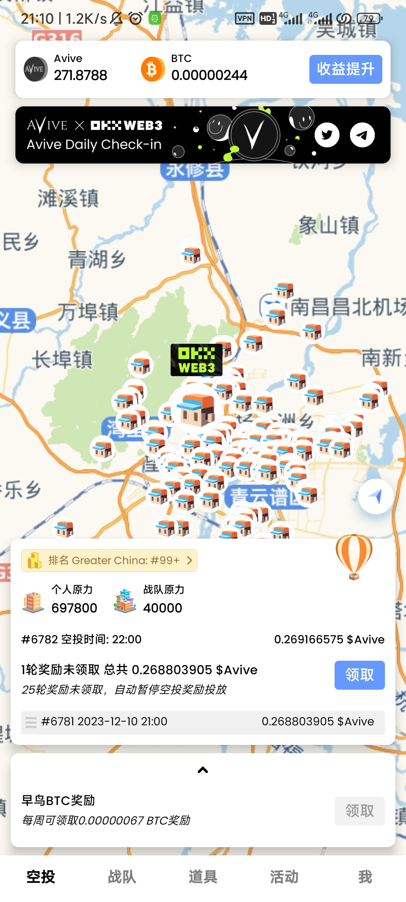
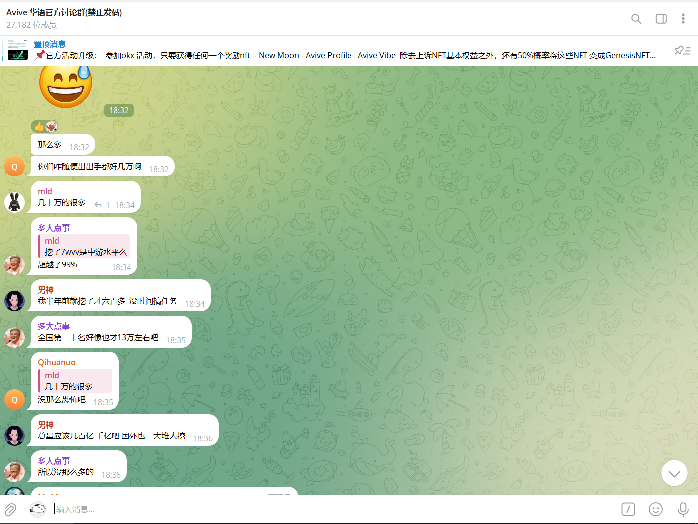

火爆全网的Avive想必大家有目共睹，有人说这是近些年年的最大风口，也有人说这又是一个庞氏。大家探讨Avive究竟是风口还是庞氏？
目前，avive已经和欧易交易所合作共建web3.0！！！
首先我们看一下Avive的总体结构
一，Avive app介绍
号称2023最強公鏈Avive World免费挖矿项目，中本聪算力模式，算力卡互换，
全球火爆上百个飞机 ，推特 粉丝爆涨，目前已经拥有800k粉，Avive World是一个来自英国的wk 项目。属于欧洲首个面向全球的区块链项目，也是欧洲首个火爆全球的项目，（大家都知道欧盟的监管非常严格的）
注册送BTC，邀请送BTC，每日领BTC。邮箱简单注册，无广告，无实铭 ，每天点一下领取Avive币
Avive创建了一个创新的PON协议，他比传统的PoS更加去中心化。
篇幅太长，简单说就是提升算力提高产量
三，Avive app亮点
2023年不可错过的海外公链avive
Avive中本聪模式，总量21亿，24小时领取，早晚各领取一次最佳!
1. 注册赠送200000算力，填写增力盒赠送50000算力
2. 每天领取VV，BTC
3. 防刷号机制
4. 一级20%，二级10%
注册链接：Avive
1.注册好填入赠礼码领取万五50000算力，可增加产量
2.赠力码使用步骤：点击底部道具→选择赠力盒→复制赠力码→点开下方道具→赠力盒→右上角使用赠力码→确定!永久增加50000原力
3.魔力石使用步骤：点击道具→选择魔力石→发起或者参与→复制互关码与他人互关（也可参与他人的互关）→确定
为了更好交流，建议注册下载Telegram，然后进群
1.全球华语讨论群

2.全球魔力石互换群
3.我找到几个赠礼盒码，给大家，速用：4NB79PD6 QANJ968L 5NBBP6A6
五，Avive 白皮书介绍
白皮书比较长，这里简单讲一下
1.avive主要功能：是基于网络证明的社交协议，它实现了deSoc。灵魂力量（原力）将个人和团体联系起来。获得的链接越多，你的分布式算力越强大；此外你的物理（现实中）或元宇宙（虚拟）位置更近你的灵魂力量就越强大。
2.具有独特的分散式连接系统，可连接链上和链外数据，提供对离线位置的实时访问。
3.其使命是建立一个社交基础协议，为链外和链上主权足迹(地理数据和链上行为)创建可互操作的层，最终发展一个分散、透明和公平的社会环境。
4.其价值是授权用户创造自己主权的个人灵魂，并建立同伴纽带、自爱和不断扩大的灵魂绑定元宇宙的基础，新世界将支持、包容并专注于促进其成员增长并发展。
5.是基于以太坊的L2缩放解决方案，利用zkSNARK技术，并由zkRollup实施，确保了从L2到L1的提交速度和可靠性。
6.不限于稳固性开发，将支持多编译语言，如Golang.Rust.C++等
小结
好了我们对avive有了一个初步了解，那我们看一下他究竟是庞氏还是风口？
所谓的庞氏在中国又称“拆东墙补西墙”或“空手套白狼”。简言之就是利用新投资人的钱来向老投资者支付利息和短期回报，以制造赚钱的假象，进而骗取更多的投资。很多非法的传销集团就是用这一招聚敛钱财的。
所以从这一点我们排除avive的庞氏嫌疑。因为我们不需要投入任何资金，而且我们获取的收益最多为2层。你相信吗?未来的世界一定是属于网络，而我们人人都可以在互联网创造价值，只是目前的互联网我们的价值已经被各大巨头吸收，而我们仅仅是观众而已。Web3的到来就是要打破这个格局，重新定义互联网，让人人都做数据的主人。我们应该心存感激，对于准备改变自己，拥抱新事物的人而言：这是一个最好的时代；对于封建顽固者，不接受时代的潮流人而言：这是一个最坏的时代。
商业的发展从以物换物——贝壳石头换物——金银铜币换物——到今天的主权信用货币换物——未来的个人价值换物，这将开启人类发展史的新篇章。生命是有价值的，你价值的深度等于参与主权网络建设的贡献度。同一个世界，同一个网络。让我们扬帆起航，一起把握即将到来的新旅程。
那它属于风口吗？
其实不用我去告诉大家，你网络搜索一下区块链、元宇宙就知道了，这是Avive从推出就火爆全球的原因。因为avive属于全新的第三代区块链，利用灵魂力量将现实中个人（团体)与虚拟的个体（团体）结合在一个层，达到人人可以掌控自己的个人数据。风口已经来临，您能否把握住？
就像小米创始人雷军说过的一句话：“只要抓住风口，猪都能够飞起来。”所以这一波风口大家绝不能错过，毕竟零撸，说不定就能轻松实现财富自由了